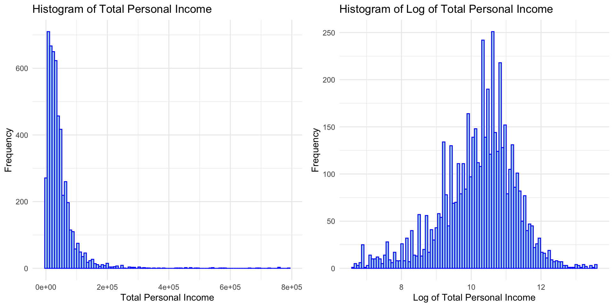
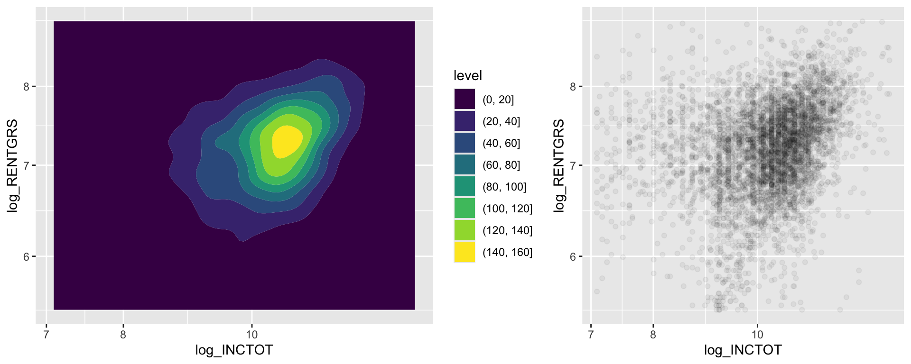

Data
We describe the sources of our data and the cleaning process.
Describe where/how to find data
Both our datasets comes from IPUMS USA.
Reference: Steven Ruggles, Sarah Flood, Matthew Sobek, Daniel Backman, Annie Chen, Grace Cooper, Stephanie Richards, Renae Rodgers, and Megan Schouweiler. IPUMS USA: Version 15.0 [dataset]. Minneapolis, MN: IPUMS, 2024. https://doi.org/10.18128/D010.V15.0
The original data of this website came from censuses as well as the American Community Surveys (ACS) that began in 2000 and are still going on today.
We chose our dataset from IPUMS because this website contains datasets that are large, valid and complex, containing detailed microdata, which aims to facilitate transformative research, education, and policy-making by aggregating data across times and places. It makes the datasets on this website very appropriate for our research to streamline our analysis of changes, data merging, and comparative research.
Datasets detail
First Dataset (YEAR of 2022)
Here is the link to our cleaned dataset cleaned dataset.
Table contains all the variables in the dataset
- Highlighted all key dependent variables (RENTGRS) and independent variables (INCTOT) in bold, as well as the logarithm of them.
| Variable | Description |
|---|---|
| INCTOT | Total personal income |
| log_INCTOT | Logarithm of total personal income |
| log_RENTGRS | Logarithm of monthly gross rent |
| RENTGRS | Monthly gross rent |
| REGION | Geographical region |
| YEAR | Year in which the data was collected |
| KITCHEN | Kitchen or cooking facilities |
| ROOMS | Number of rooms |
| NFAMS | Number of families in household |
| AGE | Age of the individual or building |
| MARST | Marital status |
| RACE | Race of the individual |
| RACED | Detailed categorization of race |
| EMPSTAT | Employment status |
| EMPSTATD | Detailed categorization of employment |
| FTOTINC | Total family income |
| POVERTY | Poverty level |
| REGION_CLASSIFIED | Classified region categorization |
| Fam_income | Alternative variable for family income |
Clean or recoding
Raw processing
Dependent variable—rent— Exclude the records indicating a rent of 0.
- This exclusion is based on the understanding that a 0 rent suggests the individual owns their home or lives in a situation not pertinent to our target research population, which is individuals who rent their housing.
Variable KITCHEN has characteristic that over 95% of houses possess a kitchen, diminishing its analytical value. Therefore, should consider to exclude this variable while the modeling.
- Exclude data entries characterized by specific codes indicative of missing or unknown values, as well as those representing values deemed inappropriate for analytical purposes. Given the vast size of the original dataset, which includes millions of records, we opted to remove the rows with these missing values directly.This decision does not compromise our ability to conduct a thorough analysis, as the remaining dataset is still large and clean enough for reliable and robust research conclusions.Removed categories are summarized under the following table.
Table of Variables with Missing Value Codes for Each Category
| Variable | Description | Notes |
|---|---|---|
| INCTOT | Total personal income | Specific codes detailed below: |
| 0000001 = $1 or break even (2000, 2005-onward ACS and PRCS) | ||
| 9999999 = N/A | ||
| 9999998 = Unknown | ||
| FTOTINC | Total family income | Specific codes detailed below: |
| -000001 = Net loss (1950) | ||
| 9999998 = Not ascertained (1950) | ||
| 9999999 = N/A | ||
| KITCHEN | Kitchen or cooking facilities | 0 = N/A |
| ROOMS | Number of rooms | 00 = N/A |
| EMPSTATA | Employment status | Specific codes detailed below: |
| 0 = Missing value | ||
| 9 = Unknown/Illegible | ||
| STATE | Geographic state identifier | Specific codes detailed below: |
| 91 = Overseas Military/Military Installations | ||
| 92 = PUMA boundaries cross state lines - Metro sample | ||
| 97 = State not identified | ||
| 99 = Not identified |
Recode some categorical data
- Recode and modified certain variables in the dataset that are encoded with specific numerical codes, which reflect categories or qualitative information rather than quantitative values. Recoded categories are summarized under the following table.
Table of Categorical Variables with Numerical Codes as Categories
| Variable | Description | Notes |
|---|---|---|
| INCTOT | Total personal income | Specific codes detailed below: |
| -009995 = -$9,900 (1980) | ||
| -000001 = Net loss (1950) | ||
| FTOTINC-000001 = Net loss (1950) | ||
| KITCHEN | Kitchen facilities | 0 = N/A |
| 1 = No | ||
| 2 = No, or shared use | ||
| 3 = Yes, shared use | ||
| 4 = Yes (shared or exclusive use) | ||
| 5 = Yes, exclusive use | ||
| MARST | Marital status | 1 = Married, spouse present |
| 2 = Married, spouse absent | ||
| 3 = Separated | ||
| 4 = Divorced | ||
| 5 = Widowed | ||
| 6 = Never married/single | ||
| 9 = Blank, missing | ||
| RACE | Race | 1 = White |
| 2 = Black/African American | ||
| 3 = American Indian or Alaska Native | ||
| 4 = Chinese | ||
| 5 = Japanese | ||
| 6 = Other Asian or Pacific Islander | ||
| 7 = Other race, nec | ||
| 8 = Two major races | ||
| 9 = Three or more major races | ||
| EMPSTAT | Employment status | 1 = Employed |
| 2 = Unemployed | ||
| 3 = Not in the labor force | ||
| REGION | Geographic region and division | Specific codes detailed below: |
| 11 = New England Division (Northeast) | ||
| 12 = Middle Atlantic Division (Northeast) | ||
| 13 = Mixed Northeast Divisions (Northeast) | ||
| 21 = East North Central Division (Midwest) | ||
| 22 = West North Central Division (Midwest) | ||
| 23 = Mixed Midwestern Divisions (Midwest) | ||
| 31 = South Atlantic Division (South) | ||
| 32 = East South Central Division (South) | ||
| 33 = West South Central Division (South) | ||
| 34 = Mixed Southern Divisions (South) | ||
| 41 = Mountain Division (West) | ||
| 42 = Pacific Division (West) | ||
| 43 = Mixed Western Divisions (West) |
Advanced Processing during the modeling
- The logarithm of both INCTOT and RENTGRS was computed due to their highly right-skewed distributions. Since applying the logarithmic transformation, we also excluded any records with negative values in these variables.
The original RENTGRS plot
The log_RENTGRS plot

The original INCTOT plot

The log_INCTOT plot

The log transformation of both variables significantly reduced their skewness.
- Exclude the outliers three standard deviations from the mean.
The following plots shows the problem of outliers in our key predictor and response variable


The first density plot shows a wide spread with some points far from the main cluster, indicative of outliers. It proves there are a lot of outliers sparsely packed and are visible on the fringes of the plot.
The second plot indicates these outliers might possibly disproportionately affect the slope and intercept of our regression line as we fit in the regression models.
After the consideration that the outliers do not reflect the typical relationship, we exclude all the outliers that are not within the three standard deviations’ range.
The following tables shows what happened after exclude the outliers of our key predictor and response variable


The density plot is to show a tighter concentration of data, with less dispersion.
The scatter plot present a clearer pattern and a trend with fewer extreme points that can distort the regression line.
Second Dataset (Merged YEAR of 2000 to 2022)
Here is the link to our cleaned dataset cleaned dataset.
The dataset includes identical variables as the first dataset, with the exception of the “YEAR” variable, which spans from 2000 to 2022.
The cleaning and processing of these datasets adhered to the same methodology utilized for the 2022 dataset, as outlined earlier.
Given the extensive size of the census and ACS datasets, a 1% random sample was extracted for analysis.
The range of years provided was utilized to perform a time series regression analysis.
Summary of numerical variables (2022)
| Summary Statistics for Rental Data (2000) | ||||
|---|---|---|---|---|
| Includes mean, median, minimum, and maximum values | ||||
| Variable | Mean | Median | Minimum | Maximum |
| RENTGRS | 1,581.17 | 1,395.00 | 213.00 | 7,730.00 |
| ROOMS | 4.65 | 4.00 | 1.00 | 18.00 |
| AGE | 43.94 | 40.00 | 16.00 | 95.00 |
| FTOTINC | 75,053.51 | 55,000.00 | 800.00 | 1,246,000.00 |
| POVERTY | 285.68 | 269.00 | 3.00 | 501.00 |
| INCTOT | 44,079.25 | 30,700.00 | 750.00 | 791,000.00 |
| NFAMS | 1.21 | 1.00 | 1.00 | 20.00 |
Summary of categorical variables (2002)
| Variable | Levels | Frequency |
|---|---|---|
| KITCHEN | No | 73 |
| KITCHEN | Yes (shared or exclusive use) | 5094 |
| MARST | Divorced | 742 |
| MARST | Married, spouse absent | 146 |
| MARST | Married, spouse present | 1557 |
| MARST | Never married/single | 2262 |
| MARST | Separated | 157 |
| MARST | Widowed | 303 |
| RACE | American Indian or Alaska Native | 61 |
| RACE | Black/African American | 728 |
| RACE | Chinese | 70 |
| RACE | Japanese | 16 |
| RACE | Other Asian or Pacific Islander | 290 |
| RACE | Other race, nec | 494 |
| RACE | Three or more major races | 51 |
| RACE | Two major races | 592 |
| RACE | White | 2865 |
| EMPSTAT | Employed | 3769 |
| EMPSTAT | Not in labour force | 1248 |
| EMPSTAT | Unemployed | 150 |
| REGION_CLASSIFIED | MIDWEST | 826 |
| REGION_CLASSIFIED | NORTHEAST | 955 |
| REGION_CLASSIFIED | SOUTH | 1921 |
| REGION_CLASSIFIED | WEST | 1465 |
Summary of numerical variables (2000-2022)
| Summary Statistics for Rental Data (2000-2022) | ||||
|---|---|---|---|---|
| Includes mean, median, minimum, and maximum values | ||||
| Variable | Mean | Median | Minimum | Maximum |
| RENTGRS | 1,118.00 | 960.00 | 154.00 | 5,767.00 |
| ROOMS | 4.63 | 4.00 | 1.00 | 26.00 |
| AGE | 42.54 | 39.00 | 16.00 | 96.00 |
| FTOTINC | 53,308.73 | 39,100.00 | −7,599.00 | 1,246,000.00 |
| POVERTY | 261.68 | 235.00 | 1.00 | 501.00 |
| INCTOT | 32,010.98 | 22,000.00 | 570.00 | 613,100.00 |
| NFAMS | 1.20 | 1.00 | 1.00 | 20.00 |
Summary of categorical variables (2000-2022)
| Variable | Levels | Frequency |
|---|---|---|
| KITCHEN | No | 1210 |
| KITCHEN | Yes (shared or exclusive use) | 94454 |
| MARST | Divorced | 15118 |
| MARST | Married, spouse absent | 2398 |
| MARST | Married, spouse present | 30238 |
| MARST | Never married/single | 38149 |
| MARST | Separated | 3676 |
| MARST | Widowed | 6085 |
| RACE | American Indian or Alaska Native | 1044 |
| RACE | Black/African American | 15225 |
| RACE | Chinese | 1126 |
| RACE | Japanese | 275 |
| RACE | Other Asian or Pacific Islander | 4213 |
| RACE | Other race, nec | 6471 |
| RACE | Three or more major races | 371 |
| RACE | Two major races | 3594 |
| RACE | White | 63345 |
| EMPSTAT | Employed | 66961 |
| EMPSTAT | Not in labour force | 23986 |
| EMPSTAT | Unemployed | 4717 |
| REGION_CLASSIFIED | MIDWEST | 17333 |
| REGION_CLASSIFIED | NORTHEAST | 18076 |
| REGION_CLASSIFIED | SOUTH | 33457 |
| REGION_CLASSIFIED | WEST | 26798 |